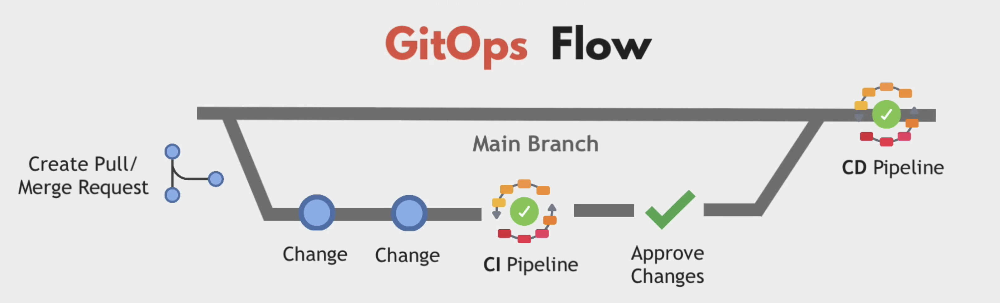
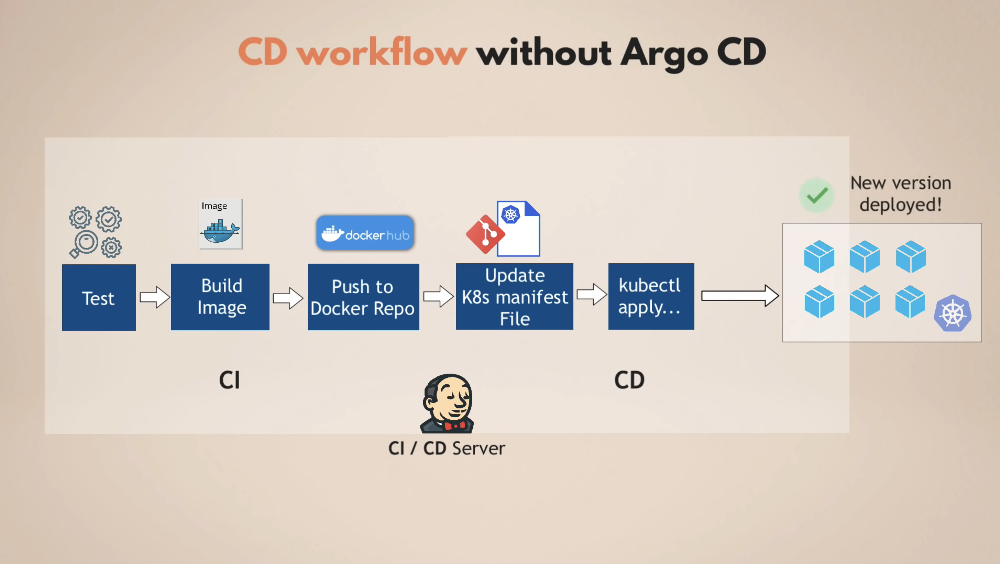
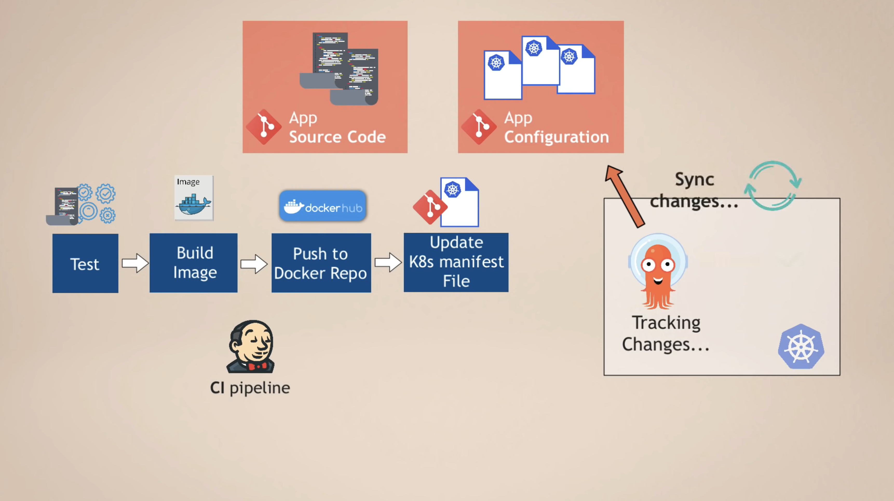
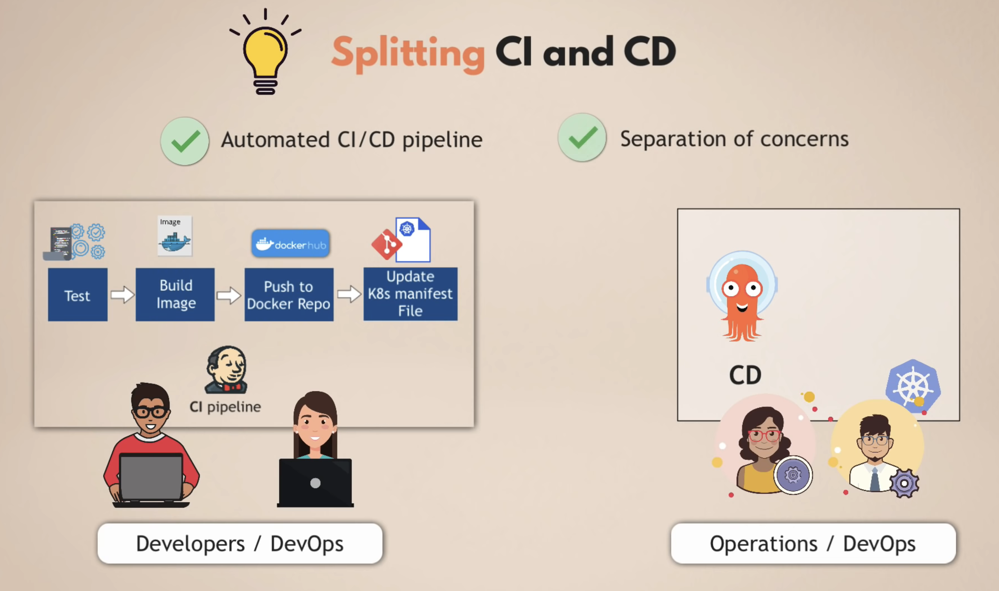
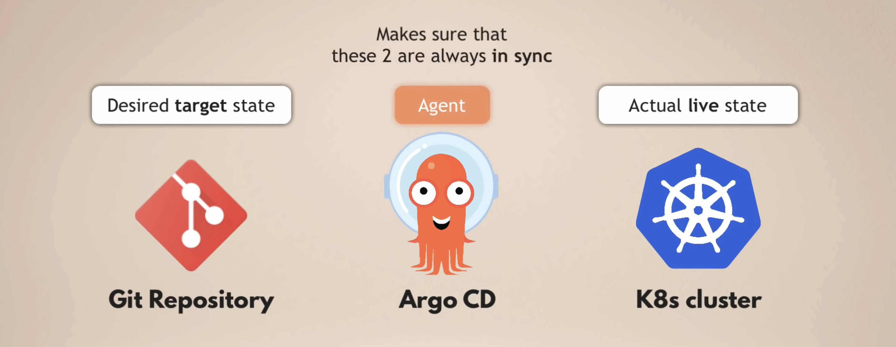
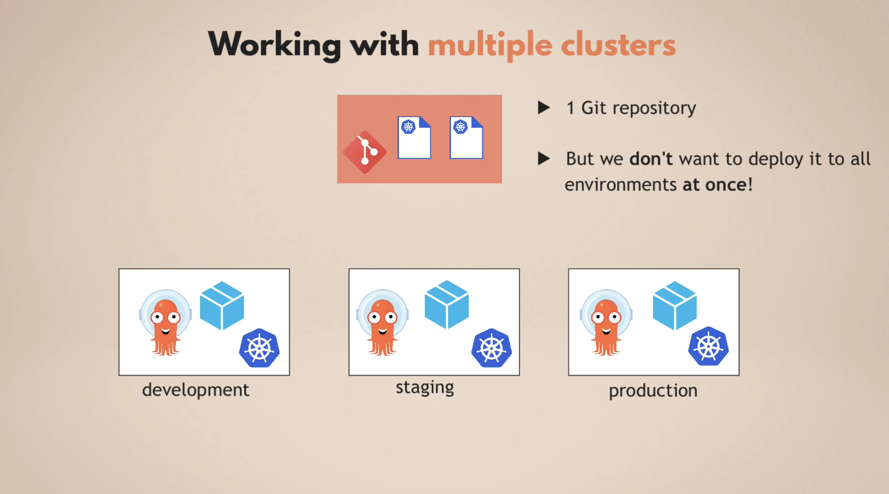
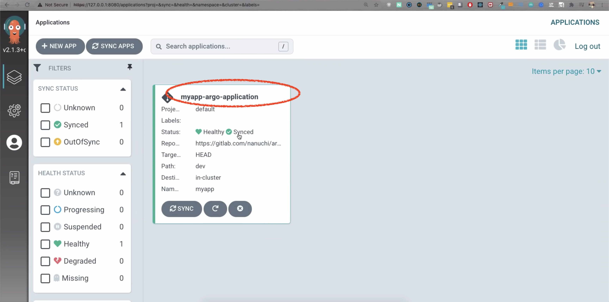
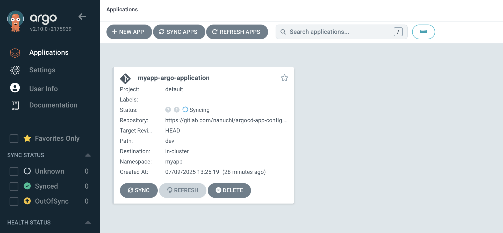
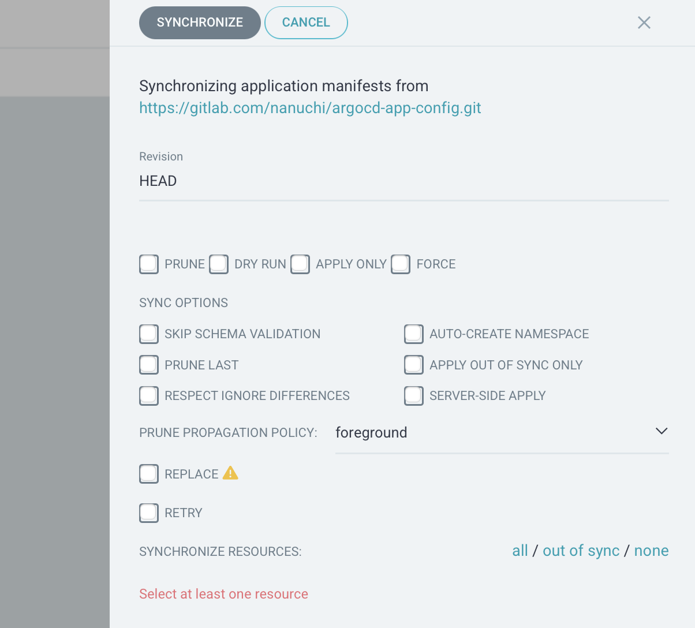

ArgoCD
GitOps¶
X as Code
- Infrastructure as Code
- Network as Code
- Policy as Code
- Configuration as Code
- Security as Code
How it works?
- X as Code on Git repo
- Engineer create the Pull Request
- Run CI Pipeline:
- validates the manifest files
- run automated tests
- Another Engineer review and approve Pull Request
- CD Pipeline deployes the changes to the Infrastructure --> instead of running
kubectl apply -f xxx.yamlon your local computer
Two Deployment Methods¶
- Push Deployment: tranditional, the Pipeline executes command and deploys the new version to the Infrastructure
- Jenkins, Gitlab CICD
- Pull Deployment: an Agent installed in the Infrastructure(such as a K8S cluster), and it actively pulls changes from Git Repo. The Agent compares desired state (in git repo) and the actual state(in Infrastructure)
- FluxCD
- ArgoCD

Advantages¶
- easy rollback
- single source of truth
- increases security by limiting access:
- CD Pipeline deploys the changes, NOT any team member
- team member only propose changes
ArgoCD¶
Continual Delivery(CD)¶
How does Continual Delivery(CD) Tool like Jenkins and GitlabCICD work?

Disadvantages:
- Extra tool: besides Jenkins, need to install & setup tools like
kubectl - Security challenge: Jenkins need access to k8s (and platform if the cluster is on cloud - such as AWS)
- once deployed, Jenkins doesn't know the deployment status
--> ArgoCD is targeting to improve the problematic CD process
How does ArgoCD help¶
ArgoCD reverse the flow - use Pull Deployment.
- Deploy ArgoCD in K8s cluster
- Configure ArgoCD to track Git repository
- ArgoCD monitors for any changes and applies automatically

Manifests
ArgoCD supports different manifests:
- Kubernetes YAML file
- Helm Charts
- Kustomize
... and other template files that generate K8s manifests
优点¶
-
Separate CI and CD:

-
Separate git repository for:
- App source code
- App confguration (K8s manifest files)
- [Optional] system configurations
-
Configuration as Code in git repo --> Single Source of Truth --> ONLY way to change is to update the git repo
- Config Files are not manually
k8s apply -f xxx.yamlfrom local laptops - Better tea collaboration with
merge request - Easier access control:
- Configuration in repo:
- all can make pull request
- ONLY Senior can approve & merge
- Access to K8s Cluster:
- optional access for human
- no external access for tools such as Jenkins
- Configuration in repo:
- easy rollback:
git revert - easy Cluster Disaster Recovery
What happens if so updates the cluster manually?
ArgoCD compares:
- desired configuration in Git repo
- actual state in Cluster
--> ArgoCD will overwrites the manual configuration!
Summary¶

configure ArgoCD in k8s Cluster¶
- Deploy ArgoCD into K8s Cluster - it extends K8s API with CRD
- Define ArgoCD resources (in YAML):
ApplicationapiVersion: argoproj.io/vlalphal kind: Application metadata: name: myapp-argo-application namespace: argocd spec: project: default source: repoURL: https://gitlab.com/nanuchi/argocd-app-config.git targetRevision: HEAD path: dev destination: server: https://kubernetes.default.svc namespace: myapp syncPolicy: syncOptions: - CreateNamespace=true automated: selfHeal: true prune: trueAppProject: to groupApplications
Examples¶
Working with multiple clusters¶
To manager multiple cluster, we JUST need to configure and manger 1 ArgoCD - the same instance is able to sync among multiple K8s clusters
Working with multiple environments¶
Background: there are dev, staging and production environments. I want to test the configuration in Git repo in this order: dev -> staging -> production. 两种方法来实现:
- Git branch for each environment 
- Use overlays with kustomize. such as:
./myapp-cluster ├──base │ ├── deployment.yaml │ ├── kustomization.yaml │ ├── rbac.yaml │ └── service.yaml └── overlays ├── development │ └── kustomization.yaml ├── staging │ └── kustomization.yaml └── production └── kustomization.yaml
Understanding¶
- ArgoCD, as a CD tool, will not replace the CI tools such as Jenkins.
- ArgoCD is a CD tool for K8s, for other platform you need to find other tools
- ArgoCD is not the unique CD tools for K8s - fluxCD, JenkinsX are alternatives
Demo¶
Goal¶
to setup a fully automated CD pipeline.
Given materials¶
- built images with different versions: nanajanashia/argocd-app --> a CI Pipeline has already been run through
- minikube cluster on your local PC
brew install minikube # verify which minikube minikube start minikube status kubectl get po -A minikube dashboard
Steps¶
1. Install ArgoCD in the cluster¶
kubectl create namespace argocd
kubectl apply -n argocd -f https://raw.githubusercontent.com/argoproj/argo-cd/stable/manifests/install.yaml
# Use the ARM-compatible manifest (v2.4+ has better ARM support)
kubectl apply -n argocd -f https://raw.githubusercontent.com/argoproj/argo-cd/v2.10.0/manifests/install.yaml
# verify
kubectl get pods -n argocd
# check service "argocd-server" to access the argoCD UI
kubectl get svc -n argocd
# port-forwarding to 127.0.0.1:8080 -> proceed anyway
kubectl port-forward -n argocd svc/argocd-server 8080:443
use credential to login to ArgoCD UI:
- Username:
admin - Password: get it from:
kubectl get secret argocd-initial-admin-secret -n argocd -o yaml # decode password with base64 echo TkxxSSSXZ== | base64 --decode
2. Configure ArgoCD Application resource¶
- Create ArgoCD
Applicationresource:apiVersion: argoproj.io/v1alpha1 kind: Application metadata: name: myapp-argo-application namespace: argocd spec: project: default # (1) Source: a git repository where the configurations are save source: repoURL: https://gitlab.com/nanuchi/argocd-app-config.git targetRevision: HEAD # <-- always the last commit path: dev # (2) Target: a K8s cluster where the configurations will be apply to destination: # since ArgoCD is running INSIDE k8s cluster, we can put the DNS - an internal svc named "kubernetes" server: https://kubernetes.default.svc # where you want to deploy the current manifest - if not "default" then you need to specify namespace: myapp syncPolicy: syncOptions: - CreateNamespace=true # this auto-generates NS myapp if not exist # 1. Enable sync # 2. Enable auto self-healing: undo/overwrite all, by default its False # 3. Enable auto pruning manual changes automated: selfHeal: true prune: true - Push the
application.yamlto Git repo kubectl apply -f application.yamlto generate resource- Now you can see the deployed application in the UI: 
Warning
- by default, ArgoCD pulls git repo every 3 mins
- to get rid of the delay, you can configure a Git Webhook
Note
- Every
Applicationbelongs to a single project
这个Application会查看git repo中的configuration 代码 - 这里指的是dev/deployment.yaml和dev/service.yaml
3. Manifests¶
如果要修改Manifests，则直接修改repo中的yaml文件，push到repo中，修改会被ArgoCD自动更新
UI¶
Applications View¶

- Sync The process of making an application move to its target state. E.g. by applying changes to a Kubernetes cluster.
- Refresh Compare the latest code in Git with the live state. Figure out what is different.
Synchronize Options (right panel)¶

1. 核心同步选项¶
- PRUNE: 删除 Git 中已移除但集群中仍存在的资源（垃圾回收）。
--> ⚠️ 若误用可能导致意外删除关键资源（需谨慎启用）。 - DRY RUN: 模拟同步过程，仅显示变更（如创建/更新/删除的资源），但不会实际执行。
--> 适用场景：验证变更是否符合预期。 - APPLY ONLY: 仅应用当前差异的资源，不执行同步其他操作（如不触发 Hook 或健康检查）。
--> 适用场景：快速修复部分资源，跳过完整同步流程。 - FORCE: 强制覆盖集群状态（即使存在冲突或保护机制）。
--> ⚠️ 可能破坏一致性，仅用于解决特定冲突（如资源被手动修改过）。
2. SYNC OPTIONS（高级配置）¶
- SKIP SCHEMA VALIDATION: 跳过 Kubernetes 资源 Schema 校验（如 CRD 未定义时）。
--> 适用场景：部署自定义资源时遇到校验错误。 - AUTO-CREATE NAMESPACE: 若资源指定的命名空间不存在，自动创建它。
--> 注意：需确保 ArgoCD 有创建命名空间的权限。 - PRUNE LAST: 在同步完成后才删除旧资源（而非过程中）。
--> 优势：避免删除依赖项导致应用中断（如先创建新 Pod 再删除旧的）。 - APPLY OUT OF SYNC ONLY: 仅同步与 Git 状态不一致的资源，跳过已同步的资源。
--> 优势：减少不必要的 API 调用。 - RESPECT IGNORE DIFFERENCES: 遵守 argocd.argoproj.io/ignore-differences 注解（如忽略特定字段的差异）。
--> 适用场景：避免因动态字段（如镜像 SHA）触发同步。 - SERVER-SIDE APPLY: 使用 Kubernetes 的 Server-Side Apply 机制（而非
kubectl apply）。
--> 优势：更好地处理字段所有权冲突。 -
PRUNE PROPAGATION POLICY: 控制删除资源的传播策略：
- foreground：等待依赖资源删除后再删除父资源（默认）。
- background：立即删除，后台清理依赖。
- orphan：保留依赖资源（不删除）。
- REPLACE: 用 kubectl replace 而非 apply（强制替换资源）。
--> ⚠️ 可能丢失未被 Git 管理的字段。 - RETRY: 自动重试失败的同步操作（需配置重试次数/间隔）。
3. SYNCHRONIZE RESOURCES（资源选择）¶
- ALL：同步所有资源（无论是否差异）。
- OUT OF SYNC：仅同步与 Git 有差异的资源（默认推荐）。
- NONE：手动选择要同步的资源（需在下方勾选）。
Danger
注意：若选择 NONE 但未勾选任何资源，同步按钮会失效。
CLI¶
argocd app get myapp
argocd app sync guestbook